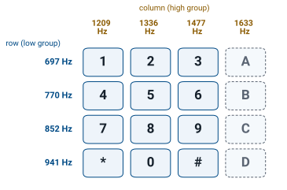
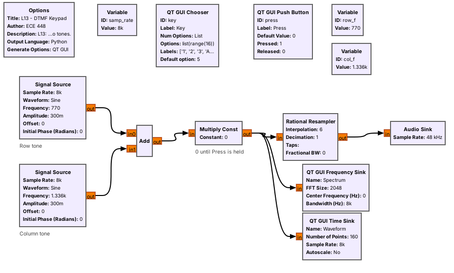
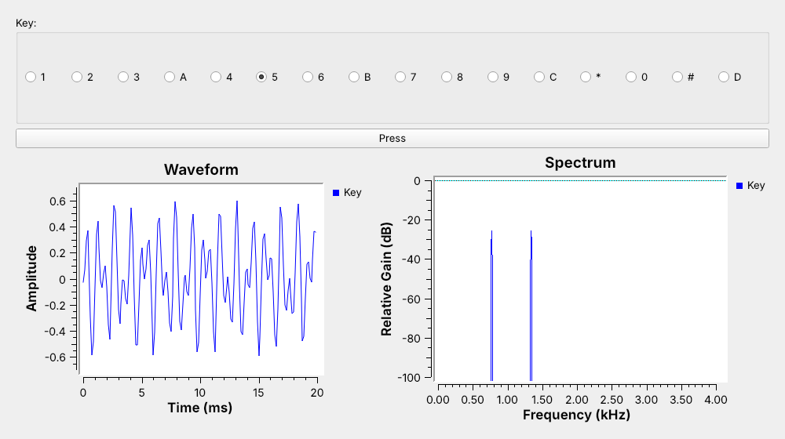
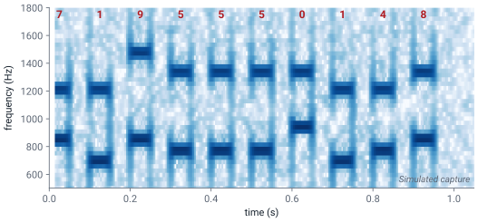
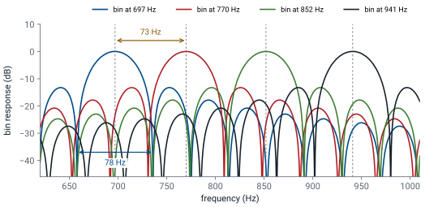
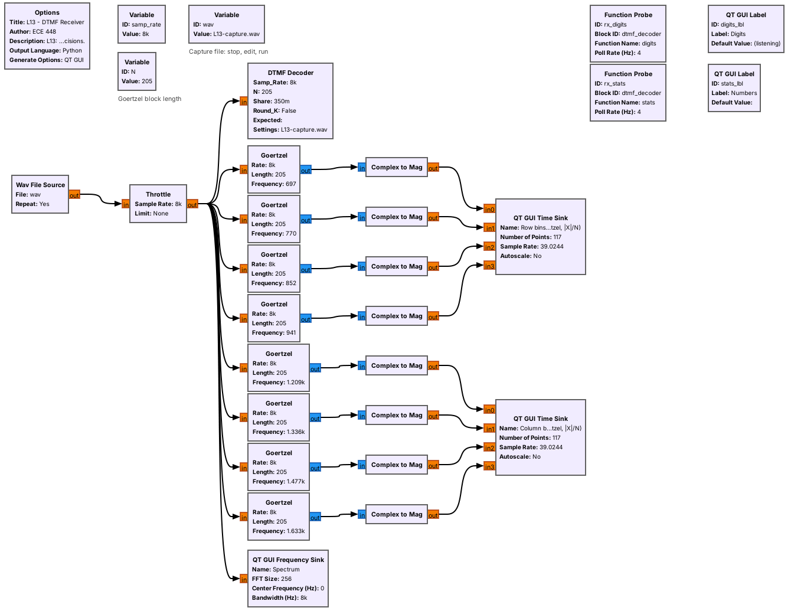
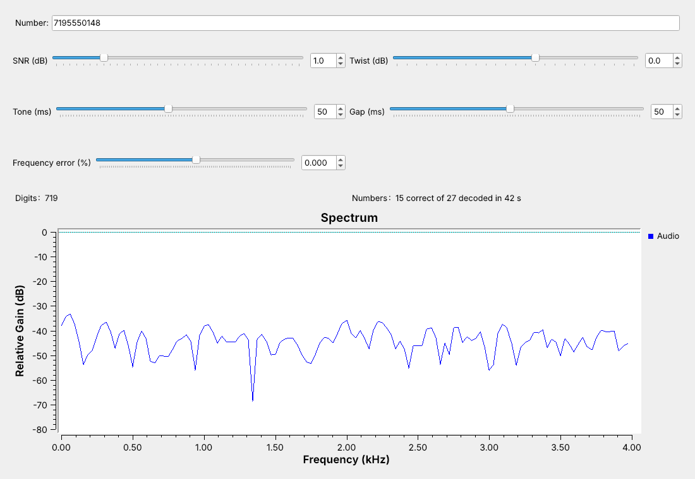

L13 - DTMF#
DTMF
A phone number as pairs of tones: generate them, capture them, and decode them in GNU Radio with a bank of Goertzel bins.
Lesson 13 · Module 6: Waveform Applications & RF Reverse Engineering · Dr. Neil Rogers
Slides
Learning Objectives
- I can decode DTMF tones from a captured audio signal.
A Phone Number in Sound

Each key sends two tones at once: one row tone and one column tone.
The receiver measures eight frequencies and reads the digits.
The figure is today’s receiver, L13-dtmf-rx.grc, decoding a capture of the number 719-555-0148. The two plots in the middle are the receiver’s eight detectors, four for the keypad’s rows and four for its columns. Each digit raises exactly one row detector and one column detector for 50 ms, and the receiver turns that pair into a digit.
This is dual-tone multi-frequency signaling, DTMF, the sound a telephone keypad makes. It still carries phone menus, voicemail codes, and door-entry systems, and two-way radios send it over FM to key repeaters and trigger remote equipment. Lesson 12 decoded one tone switched on and off; DTMF carries a digit in the frequencies of two tones. The capture is synthetic: L13-dtmf-capture.grc dialed it and added noise, as a later frame shows.
The Keypad Grid

Four row tones, 697 to 941 Hz, and four column tones, 1209 to 1633 Hz.
Each key is one row tone plus one column tone.
A key sends the tone of its row and the tone of its column together. The ‘5’ key, for example, sends 770 Hz and 1336 Hz. Eight frequencies give 16 keys. Telephones use the first three columns; the military’s AUTOVON network used the fourth column, A to D, to set call precedence, and radio systems still use it for control codes.
The frequencies are not round numbers on purpose: they are chosen so that no tone’s harmonics land on another tone. The closest pair is 697 and 770 Hz, 73 Hz apart, and that spacing sets how sharp the receiver’s filters must be.
One Key in GNU Radio

Two Signal Sources, an Add, and a gate make one key.
row_fandcol_flook up the key’s two frequencies.
L13-dtmf-keypad.grc builds one key from stock blocks. The Chooser sets key from 0 to 15, and two variables look up its frequencies: row_f is [697, 770, 852, 941][key // 4] and col_f is [1209, 1336, 1477, 1633][key % 4]. Two float Signal Sources make the tones at amplitude 0.3 each, an Add sums them, and a Multiply Const by press passes the sum only while you hold the Press button.
Everything runs at 8 kHz, the telephone sample rate. Laptop sound cards do not all accept 8 kHz, so a Rational Resampler raises the rate by 6 to 48 kHz for the Audio Sink.
Follows: GNU Radio wiki, Signal Source.
Two Tones, One Key

Key ‘5’ puts lines at 770 and 1336 Hz.
In time, the two tones beat; in frequency, they separate.
With ‘5’ held, the spectrum shows two lines, one in each group. The waveform is hard to read: the two tones add, and the sum rises and falls as they move in and out of phase. In frequency the digit is obvious, so a DTMF receiver works in frequency, and its question for each moment is which row tone and which column tone are present.
Timing and Twist
A tone lasts 40 ms or longer.
The gap between digits lasts 20 ms or longer.
The column tone may arrive a little weaker than the row tone.
A DTMF sender holds each tone pair for at least 40 ms and leaves at least 20 ms of silence between digits. An auto-dialer typically sends 50 ms of tone and 50 ms of silence, 10 digits a second. A receiver has to catch tones that short, and it has to ignore anything much shorter, which is how it avoids taking a burst of speech for a digit.
The two tones of a key do not always arrive at the same level. A telephone line loses more at high frequencies, so the column tone often arrives a few dB weaker than the row tone. The level difference is called twist, and the link flowgraph later in this lesson has a slider for it.
The Capture

L13-dtmf-capture.grcdials a number and writes a WAV file.Our capture uses 50 ms tones and gaps, −2 dB twist, and 20 dB SNR.
A phone recording would be ideal, but we made the capture instead, so every setting is known. L13-dtmf-capture.grc uses an Embedded Python Block, the DTMF Dialer, which sends a string of digits with a chosen tone length, gap, and twist. A Noise Source adds Gaussian noise, a Head block stops after one dialing and a 500 ms pause, and a Wav File Sink writes L13-capture.wav: 1.5 s at 8 kHz, 16 bits.
The spectrogram shows the result. Each digit is two short marks, one in the row band and one in the column band, and reading the grid by eye already gives 7195550148. The three 5s are three separate digits because a 50 ms gap separates them. The SNR setting says how strong the tones are compared with the noise; at 20 dB the noise is the light speckle behind the marks.
Ready-Made Decoders
multimon-ng and phone apps such as Android’s DTMF decoders read the capture.
How else could we decode it? Build the decoder ourselves.
Ready-made decoders already handle DTMF. multimon-ng runs on Linux (sudo apt install multimon-ng sox), on macOS (brew install multimon-ng sox), and on Windows inside WSL2. Run multimon-ng -t wav -a DTMF L13-capture.wav in the folder with the capture, and it prints DTMF: 7, DTMF: 1, and so on, one line per digit, through DTMF: 8: all ten digits of 7195550148. A DTMF decoder app on an Android phone does the same through the phone’s microphone while the laptop plays the file. Building the transmitter in GNU Radio was easy; the rest of this lesson builds the decoder, which takes more thought.
Separating Neighboring Tones
A detector for each tone is a band-pass filter, then an energy measurement.
Each filter must reject a neighbor 73 Hz away.
A filter that narrow needs tens of milliseconds of signal.
The direct way to decode DTMF is a bank of eight band-pass filters, one per tone, each followed by an energy detector: square the output and average it. The digit is the strongest row filter and the strongest column filter. The design problem is the filter width. The 697 Hz filter must pass 697 Hz, even when the tone is a little off frequency, and reject 770 Hz, only 73 Hz away.
A narrow filter needs time: the closer two tones are, the longer the filter must listen before it can tell them apart. A 40 ms tone leaves room for a block of about 25 ms, with a margin for the tone’s start and end, and practical receivers use that length.
The Goertzel Block
Goertzel |
Setting |
|---|---|
Rate |
8000 |
Length |
205 |
Frequency |
one DTMF tone |
205 samples last 25.6 ms; bins 39 Hz apart.
The Goertzel algorithm builds exactly that filter. It measures the energy at one frequency over a block of samples, far more cheaply than an FFT of the whole band when only eight frequencies matter. GNU Radio has it as a stock block, Goertzel, with three parameters: the sample rate, the block length, and the frequency to measure.
The classic setting is a length of 205 at 8 kHz. One block then lasts \(205/8000 = 25.6\) ms, which fits inside a 40 ms tone, and \(8000/205\) puts the bins 39 Hz apart, nulls 39 Hz either side. The receiver uses eight Goertzel blocks with the same rate and length, one at each DTMF frequency.
Follows: GNU Radio wiki, Goertzel.
Bins Against Tone Spacing

Bins 39 Hz apart, nulls 39 Hz either side.
A neighbor tone lands far down the other bins’ curves.
Each Goertzel bin is a band-pass filter read once per block. The figure plots the four row bins. Each peaks at its own tone, with bins 39 Hz apart and nulls 39 Hz either side, and each neighboring tone, a dashed line, lands far down the other bins’ curves, so the correct bin always measures the most energy.
A longer block narrows the bins but needs a longer tone. A shorter block responds faster, so it accepts shorter bursts, and its wider bins accept tones farther off frequency. The L13 Lab changes the block length and watches both.
The Receiver

Eight stock Goertzel blocks show the bins.
The DTMF Decoder block makes the decisions.
L13-dtmf-rx.grc reads a WAV file at 8 kHz. Eight stock Goertzel blocks, one per tone with length 205, each output one complex value per block, the bin divided by \(N\); a Complex to Mag turns it into half the tone’s amplitude, which is why the row bins in the opening figure peak at 0.15 for a 0.3 tone.
The DTMF Decoder is an Embedded Python Block that runs the same eight Goertzel bins itself, on a block of 205 samples every 102 samples, so the blocks overlap by half. It applies the decision rules on the next frame and reports each number it hears to the Digits and Numbers labels.
Follows: GNU Radio wiki, Wav File Source.
The Decision Rules
The best row and column bins hold 35% of the block’s energy.
Each beats its group’s other bins by 6 dB.
Twist is within −10 to +6 dB.
Three blocks in a row agree.
For each block, the decoder picks the strongest row bin and the strongest column bin. Test 1 rejects noise and speech, where the energy is spread out. Test 2 rejects a signal with two tones in one group. Test 3 rejects a pair whose levels differ too much: a column tone 10 dB or more weaker, or 6 dB or more stronger, than the row tone.
A digit counts once three overlapping blocks in a row agree on it. The blocks start 102 samples apart, so the tone must last longer than about one 25.6 ms block, which rejects short bursts. The same digit counts again only after a block that does not show it, which is how 555 reads as three digits. A pause of 200 ms ends the number.
DTMF Explorer
The left panel shows the response of all eight Goertzel bins for the block length N, main lobes bold, with the two tones sent marked in amber. The right panel shows the share of one noisy block’s energy in each bin, with the decoder’s choice in navy, or red when a test fails. Press keys, then lower the SNR until “too little energy” appears. Move the frequency error until the tone slides off its bin. Lower N until the main lobes overlap and “no clear winner” appears, and raise the twist past +6 dB. The explorer tests one block; the flowgraph also needs three blocks in a row to agree.
Add Noise Until Digits Drop

Lower the SNR slider until digits start to drop.
Every number arrives down to about 2 dB; almost none at 0 dB.
L13-dtmf-link.grc puts the dialer, a noise source, and the decoder in one flowgraph, with sliders for the SNR, twist, tone and gap lengths, and frequency error, and it counts the numbers decoded correctly since a setting last changed. At 1 dB SNR the screenshot shows 15 of 27 correct.
Lower the SNR and watch the spectrum fill with noise. Every number arrives down to about 2 dB, because each bin, with bins 39 Hz apart and nulls 39 Hz either side, sees only a small slice of the noise. Some numbers drop near 1 dB, and almost none arrive at 0 dB. Noise alone, run for ten minutes, produced no false digits. The frequency-error slider shows the same kind of edge with no noise: every key decodes at 1.5% off frequency, and none at 2%.
DTMF on a Real Radio
Two-way radios send DTMF over FM to control repeaters.
L13-nfm-pluto.grcreceives narrow FM on the PlutoSDR.Its audio feeds the same DTMF Decoder.
The L13 Lab decodes a phone through the microphone.
On the air, radios send DTMF over narrowband FM. Amateur repeaters accept DTMF commands, and many handheld radios have a DTMF keypad. L13-nfm-pluto.grc receives it: type a channel that carries DTMF, such as a local 2 m repeater’s output, into Channel; the course Plutos run in extended-frequency mode, 70 MHz to 6 GHz, so the 2 m band is in range. The PlutoSDR tunes 200 kHz below the channel at 1.536 MS/s, with its gain in slow-attack automatic mode, and a Frequency Xlating FIR Filter brings the channel to 0 Hz at 48 kHz. GNU Radio’s NBFM Receive block demodulates it with a 5 kHz deviation setting, the amateur standard, and decimates the audio by 6 to the decoder’s 8 kHz. The audio plays on the speaker and feeds the eight Goertzel bins and the DTMF Decoder, which takes the Wav File Source’s place. The band and its waterfall help you find the channel, 200 kHz right of center. The flowgraph is compiled but not yet run on a live channel.
Optional: multimon-ng, the 2025 deck’s ready-made decoder, prints the digits from a recording; sox L13-capture.wav -t raw -e signed-integer -b 16 -r 22050 -c 1 - | multimon-ng -t raw -a DTMF - decodes the lesson’s capture correctly.
Nothing in this lesson transmits, and decoding is receive-only. In class we transmit only into a cable, into a shielded enclosure, or at very low power in an ISM band, and only when the lesson says to. The L13 Lab uses a real acoustic signal instead: L13-dtmf-mic.grc decodes a phone’s keypad tones from the laptop’s microphone. It is compiled only and not yet tested with a real microphone.
Key Point
Each DTMF key is one row tone plus one column tone. Goertzel blocks of length 205 at 8 kHz separate tones 73 Hz apart, and a digit counts when one row bin and one column bin dominate for three blocks.
Downloads
L13-dtmf-keypad.grc: one DTMF key, played on the laptop’s speaker and shown in time and frequency. No hardware needed.
L13-dtmf-capture.grc: dials a number, adds noise, writes
L13-capture.wav, and stops. No hardware needed.L13-capture.wav: the synthetic capture of 719-555-0148, 1.5 s at 8 kHz.
L13-dtmf-rx.grc: the receiver, with the eight Goertzel bins and the DTMF Decoder. No hardware needed.
L13-dtmf-link.grc: dialer, noisy channel, and decoder, with sliders. No hardware needed.
L13-nfm-pluto.grc: a narrowband FM receiver on the PlutoSDR feeding the DTMF Decoder, with the band, a waterfall, and audio. Needs a PlutoSDR; receive only.
L13-dtmf-sweep.py: the noise and frequency-error sweeps behind this page’s observations, run headless. Put it beside
L13-dtmf-link.grc.
Put the files in one folder; the receiver opens the WAV file by name from that folder. Open a .grc file from GRC’s File menu, or run gnuradio-companion L13-dtmf-rx.grc from the radioconda prompt. The DTMF Dialer and DTMF Decoder are Embedded Python Blocks, saved inside the .grc files.
Tutorials this lesson follows:
Embedded Python Block, GNU Radio wiki: how the DTMF Dialer and DTMF Decoder are written.
Goertzel, GNU Radio wiki: the block behind the receiver’s eight bins.
Signal Source, GNU Radio wiki: the two tones of the keypad.
Wav File Source, GNU Radio wiki: how the receiver reads a capture.
multimon-ng: the ready-made decoder from the 2025 deck.
Summary
Idea |
What it is |
Number to remember |
|---|---|---|
DTMF key |
one row tone plus one column tone |
rows 697-941 Hz, columns 1209-1633 Hz |
Tone spacing |
closest pair, 697 and 770 Hz |
73 Hz apart |
Timing |
tones 40 ms and up, gaps 20 ms and up |
auto-dialers send 50 ms and 50 ms |
Twist |
the two tones arrive at different levels |
the link has a slider for it |
Goertzel block |
energy at one frequency over one block |
length 205: 25.6 ms, bins 39 Hz apart |
Decoder |
share, 6 dB winner, twist, three blocks |
digits start to drop near 1 dB SNR |
Practice
Looking Ahead
The L13 Lab builds the keypad, decodes a capture, finds the decoder’s limits, and decodes a real phone.
Lesson 14 receives HD Radio, a digital signal beside an FM station.
The L13 Lab is the hands-on version of this lesson. You build the keypad from an empty canvas, decode a second capture whose number you do not know, watch where the decoder starts to miss digits as you change the noise, twist, timing, and block length, and decode the keypad tones of a real phone through the laptop’s microphone.
Lesson 14 moves from audio back to RF with HD Radio, the digital broadcast that sits on either side of many FM stations.